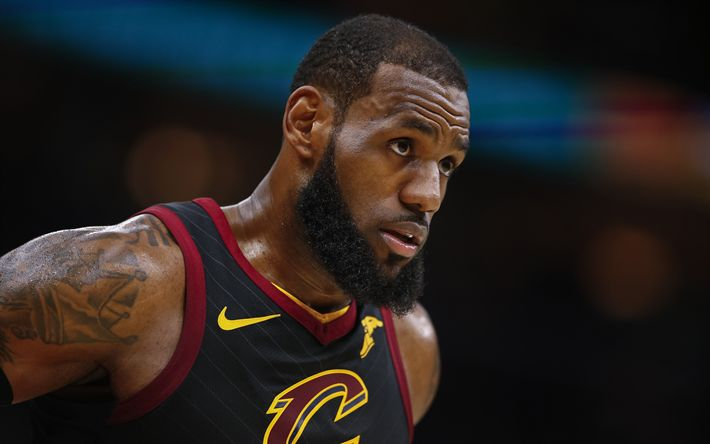

Em 2014, LeBron James retornou ao Cleveland Cavaliers com um objetivo claro: levar um título para sua cidade natal. Sua volta trouxe novamente grandes expectativas para a franquia. Com LeBron como principal liderança, os Cavaliers passaram a disputar o topo da Conferência Leste e protagonizaram algumas das séries mais marcantes da NBA durante esse período.
